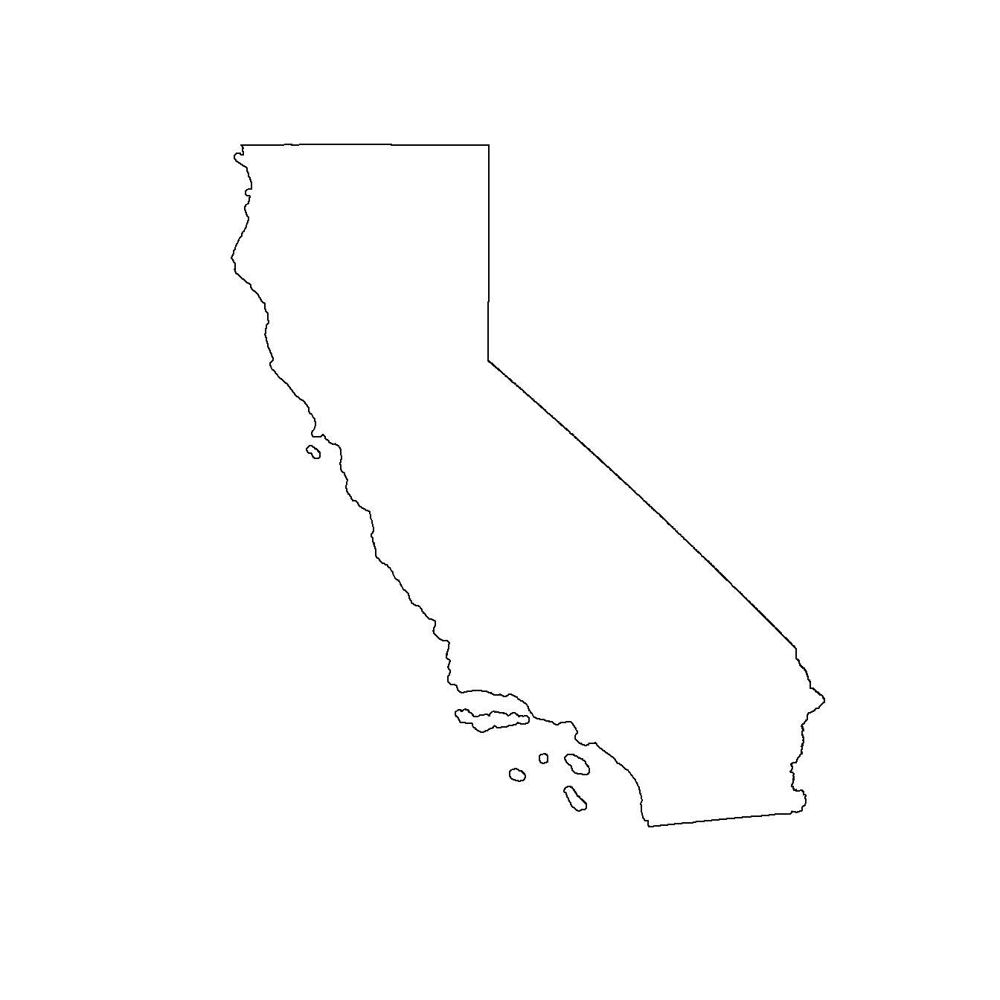
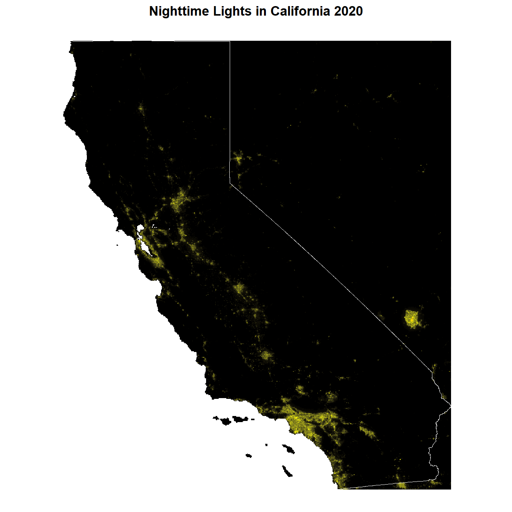
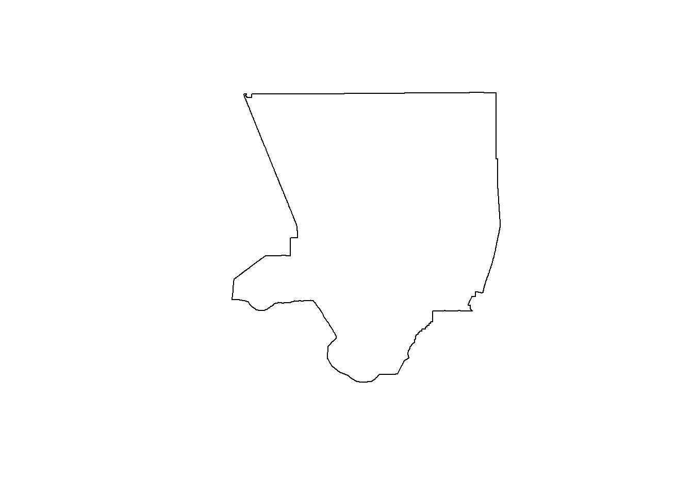

Case study: Nighttime lights
Introduction to Nighttime Light Data
Acquisition of Nighttime Light (NL) Data 📡
Opposed to daytime satellite image acquisition NL are detected by passive sensors detecting thermal or microwave spectral regions (heat related radiation).
DMSP/OLS (Defense Meteorological Satellite Program’s Operational Line-scan System): Nighttime satellite imagery obtained to detect clouds at night with low light imaging (the moon). This was helpful in the first studies of light pollution in the 70s. However, DMSP/OLS is not very high in quality, blurring an “overglowing” is caused by intense scattering.
VIIRS: Is an improved version of DMSP/OLS consisting of 2 MODIS sensors, 36 spectral bands and Visible Infrared Imaging Radiometer Suite (VIIRS). The sensors are especially sensitive to lower nighttime light levels due to panchromatic DNB (Day/Night Band) that detects visible and near-infrared wavelength. Compared to DMSP the “overglow” is reduced and spatial resolution increased. Due to its high resolution and sensitivity VIIRS can effectively detect seasonal changes in intensity of NLs.
Landsat: Detecting thermal night-time information though only detecting really bright nighttime lights. Photos from ISS: Digital photos taken from the ISS only have moderate spatial resolution. However, they have been helpful in environmental impact and ecological studies, among others.
Citizen Science: “Cities at Night” project works with in 3-steps: classification, allocation and georeferencing. The project resulted in 190,000 night images tagged, 3000 images located (1 GCP), 700 images geo-referenced (enough GCP). (Levin, 2020)
NASA’s Blackmarble 🌑
NASA’s Blackmarble uses VIIRS DNB sensors onboard of the Suomi NPP and NOAA-20 satellites. The VIIRS DNB has a high spatial resolution of 500 m and is calibrated and corrected for atmospheric, terrain, lunar BRDF, thermal, and straylight effects. This is resulting in faster retrieval time and less noise, facilitating research based on daily, seasonal and annual changes in NLs. Levin, 2020
Introduction case study
Working with NL data can give insights to natural and human activity, as well as socioeconomic phenomenons. In this case study we will focus on the relation between NL and population in Los Angeles County. We will try to visualize correlations and test the accuracy of NL as indicator for sociodemographic phenomenons. The workflow we will follow looks like this: data retrieval using an API, pre-processing (log-transformation), subsetting (masking & cropping) the AOI, disaggregation (matching resolution), stacking layers, data preparation & model training (randomForest, imputation logics), descriptive statistics.
In case you are not all upt to date in working with raster layers and data cubes, please have a look at that topic again.
R package blackmarbler
blackmarbleR by Robert Marty and Gabriel Stefanini Vicente (2025) supports easy access to NASA’s Black Marble API. Let’s check out their vignette to set up an account and the data retrieval.
library(blackmarbler)Warning: Paket 'blackmarbler' wurde unter R Version 4.4.3 erstelltData retrieval
The function bm_raster() to retrieve the nighttime lights requires as input an sfobject to determine the spatial extent of the downloaded data. The object must be in WGS84.
We will focus on California. Let’s load US states shapefiles with the tigris package and subset to California.
CA_sf <- tigris::states(progress_bar=FALSE) |>
dplyr::filter(STUSPS == "CA") |>
sf::st_transform(crs = "EPSG:4326")Retrieving data for the year 2024print(CA_sf)Simple feature collection with 1 feature and 15 fields
Geometry type: MULTIPOLYGON
Dimension: XY
Bounding box: xmin: -124.482 ymin: 32.52951 xmax: -114.1312 ymax: 42.0095
Geodetic CRS: WGS 84
REGION DIVISION STATEFP STATENS GEOID GEOIDFQ STUSPS NAME LSAD
1 4 9 06 01779778 06 0400000US06 CA California 00
MTFCC FUNCSTAT ALAND AWATER INTPTLAT INTPTLON
1 G4000 A 403673433805 20291632828 +37.1551773 -119.5434183
geometry
1 MULTIPOLYGON (((-119.9999 4...plot(sf::st_geometry(CA_sf))
Once you have set up your profile at NASA’s Earth Data Portal and generated your API token, you can assign it to an object in R for the data retrieval.
bearer <- Sys.getenv("NASA-token")
# If you work locally, directly assign it
# bearer <- "YOUR_TOKEN"Now we can download the data from NASA’s API.
CA_nl_stack <- bm_raster(roi_sf = CA_sf,
product_id = "VNP46A4", # for yearly data
date = 2017:2020, # same four years like our population data
bearer = bearer, # your API token
output_location_type = "file", # we want to store geotiff on disk
file_dir = "./data/", # where to store geotiff
file_return_null = FALSE # also create SpatRaster file
)How to store as GeoTIFFs
By default, the function writes the data to theR environment (output_location_type = "memory"). If you want to store it as single GeoTIFFs, specify output_location_type = "file and the file path with file_dir=. file_return_null= further specifies whether the data is additionally loaded to the R environment.
Let’s have a quick lock at our data:
CA_nl_2020 <- terra::rast("./data/VNP46A4_NearNadir_Composite_Snow_Free_qflag_t2020.tif")
print(CA_nl_2020)class : SpatRaster
dimensions : 2275, 2485, 1 (nrow, ncol, nlyr)
resolution : 0.004166667, 0.004166667 (x, y)
extent : -124.4833, -114.1292, 32.52917, 42.00833 (xmin, xmax, ymin, ymax)
coord. ref. : lon/lat WGS 84 (EPSG:4326)
source : VNP46A4_NearNadir_Composite_Snow_Free_qflag_t2020.tif
name : t2020
min value : 0.0
max value : 269.2 Pre-processing
The data is right-skewed. We perform a log-transformation to account for that. Let’s have a look at our data now.
CA_nl_2020[] <- log(CA_nl_2020[] + 1)
ggplot() +
geom_spatraster(data = CA_nl_2020) +
geom_sf(data = CA_sf,
fill = "transparent",
color = "white",
size = 4) +
scale_fill_gradient2(low = "black",
mid = "yellow",
high = "red",
midpoint = 3,
na.value = "transparent") +
labs(title = "Nighttime Lights in California 2020") +
coord_sf() +
theme_void() +
theme(plot.title = element_text(face = "bold", hjust = 0.5),
legend.position = "none")<SpatRaster> resampled to 500980 cells.
Subsetting
In order to define our AOI to Los Angeles County 🌃 we first need to:
# Load LA County file
LA_county <- tigris::counties("CA",
progress_bar = FALSE
) |>
filter(NAME == "Los Angeles") |>
st_transform(crs = "EPSG:4326")Retrieving data for the year 2024# Subset to "mainland" California and
# exclude the two islands Santa Catalina and San Clemente
LA_county <- LA_county %>%
st_cast("POLYGON") %>%
mutate(area = st_area(.)) %>%
slice_max(area, n = 1)Warning in st_cast.sf(., "POLYGON"): repeating attributes for all
sub-geometries for which they may not be constantprint(LA_county)Simple feature collection with 1 feature and 19 fields
Geometry type: POLYGON
Dimension: XY
Bounding box: xmin: -118.9517 ymin: 33.65955 xmax: -117.6464 ymax: 34.8233
Geodetic CRS: WGS 84
STATEFP COUNTYFP COUNTYNS GEOID GEOIDFQ NAME
1.2 06 037 00277283 06037 0500000US06037 Los Angeles
NAMELSAD LSAD CLASSFP MTFCC CSAFP CBSAFP METDIVFP FUNCSTAT
1.2 Los Angeles County 06 H1 G4020 348 31080 31084 A
ALAND AWATER INTPTLAT INTPTLON area
1.2 10516008433 1784982940 +34.1963983 -118.2618616 10863687022 [m^2]
geometry
1.2 POLYGON ((-118.0288 33.8733...plot(st_geometry(LA_county))
Now that we have an sf file of our AOI, we can prepare our two raster files.
# Create LA raster files for population and night lights in 2020
LA_pop_2020 <- terra::rast("./data/US-CA_ppp_2020_1km.tif") |>
terra::mask(terra::vect(LA_county)) |>
terra::crop(LA_county)
LA_pop_2020[] <- log(LA_pop_2020[] + 1)
LA_nl_2020 <- terra::mask(CA_nl_2020,
terra::vect(LA_county)) |>
terra::crop(LA_county)Disaggregation
Our two raster files have the same CRS and (almost same) spatial extent. Unfortunately, the resolution (cell size) differs. Our population data is on an approx. 1km grid and our night lights data on an approx. 500m grid.
Checking cell size
print(LA_pop_2020)class : SpatRaster
dimensions : 140, 157, 1 (nrow, ncol, nlyr)
resolution : 0.008333333, 0.008333333 (x, y)
extent : -118.9512, -117.6429, 33.65792, 34.82458 (xmin, xmax, ymin, ymax)
coord. ref. : lon/lat WGS 84 (EPSG:4326)
source(s) : memory
varname : US-CA_ppp_2020_1km
name : US-CA_ppp_2020_1km
min value : 0.000000
max value : 9.843707 print(LA_nl_2020)class : SpatRaster
dimensions : 280, 313, 1 (nrow, ncol, nlyr)
resolution : 0.004166667, 0.004166667 (x, y)
extent : -118.95, -117.6458, 33.65833, 34.825 (xmin, xmax, ymin, ymax)
coord. ref. : lon/lat WGS 84 (EPSG:4326)
source(s) : memory
varname : VNP46A4_NearNadir_Composite_Snow_Free_qflag_t2020
name : t2020
min value : 0.000000
max value : 4.400603 So how can we align two layers? There are multiple ways, like always in R. Firstly we will try out terra::disagg() / terra::aggregate() . By splitting each cell into smaller parts we can increase the resolution of a grid to adjust it to another. It is the simplest and fastest way to harmonize multiple cell sizes and increase their resolution without altering original values.
First option: Increase resolution for population data
# Increase resolution for population data
LA_pop_2020_high <- terra::disagg(LA_pop_2020,
fact = c(2, 2),
method = "bilinear")
# There is still a slight mismatch due to rounding errors (one more ncol)
# Let's crop to the spatial extent of the nightlights data
LA_pop_2020_high <- crop(
LA_pop_2020_high,
terra::ext(LA_nl_2020)
)# Cross-check
res(LA_pop_2020_high)[1] 0.004166667 0.004166667res(LA_nl_2020)[1] 0.004166667 0.004166667ext(LA_pop_2020_high)SpatExtent : -118.9512495092, -117.64708284775, 33.65791673341, 34.82458339541 (xmin, xmax, ymin, ymax)ext(LA_nl_2020)SpatExtent : -118.95, -117.645833333333, 33.6583333333333, 34.825 (xmin, xmax, ymin, ymax)# A small rounding error in extent will prohibit to concatenate
# into a stack. We now force the extent
ext(LA_pop_2020_high) <- ext(LA_nl_2020)Second option: Decrease resolution for nightlights data
# Decrease resolution for nightlights data
LA_nl_2020_low <- terra::aggregate(LA_nl_2020,
fact = c(2, 2),
method = "bilinear")
# There is still a slight mismatch due to rounding errors (one more ncol)
# Let's crop to the spatial extent of the population data
LA_nl_2020_low <- crop(
LA_nl_2020_low,
terra::ext(LA_pop_2020)
)# Cross-check
res(LA_pop_2020)[1] 0.008333333 0.008333333res(LA_nl_2020_low)[1] 0.008333333 0.008333333ext(LA_pop_2020)SpatExtent : -118.9512495092, -117.6429161811, 33.65791673341, 34.82458339541 (xmin, xmax, ymin, ymax)ext(LA_nl_2020_low)SpatExtent : -118.95, -117.641666666667, 33.6583333333333, 34.825 (xmin, xmax, ymin, ymax)ext(LA_nl_2020_low) <- ext(LA_pop_2020)Another way to match different grids is terra::resample(). By interpolating the resolution of one layer is adjusted to another one. The advantage: this method accounts more for the real spatial pattern.
# Cross-check
LA_pop_2020_resampled <- resample(
x = LA_pop_2020,
y = LA_nl_2020,
method = "bilinear"
)
res(LA_pop_2020_resampled)[1] 0.004166667 0.004166667res(LA_nl_2020)[1] 0.004166667 0.004166667ext(LA_pop_2020_resampled)SpatExtent : -118.95, -117.645833333333, 33.6583333333333, 34.825 (xmin, xmax, ymin, ymax)ext(LA_nl_2020)SpatExtent : -118.95, -117.645833333333, 33.6583333333333, 34.825 (xmin, xmax, ymin, ymax)Stacking layers
Only when all grids and resolutions of our layers match we can start combining layers into a raster stack.
LA_stack <- c(LA_pop_2020_resampled, LA_nl_2020)
print(LA_stack)class : SpatRaster
dimensions : 280, 313, 2 (nrow, ncol, nlyr)
resolution : 0.004166667, 0.004166667 (x, y)
extent : -118.95, -117.6458, 33.65833, 34.825 (xmin, xmax, ymin, ymax)
coord. ref. : lon/lat WGS 84 (EPSG:4326)
source(s) : memory
varnames : VNP46A4_NearNadir_Composite_Snow_Free_qflag_t2020
VNP46A4_NearNadir_Composite_Snow_Free_qflag_t2020
names : US-CA_ppp_2020_1km, t2020
min values : 0.000000, 0.000000
max values : 9.733816, 4.400603 varnames(LA_stack) <- c("population", "nightlights")
names(LA_stack) <- c("population", "nightlights")
terra::plot(LA_stack)
Model Training with Imputation Logics 🏋️♀️
Previous examples follow the idea of interpolating existing data across the spatial domain. Imputation fills in missing values based on a prediction model. Let’s consider our two variables to make up a stylized example:
We know that population density and nightlights is correlated. We could try to predict the missing values for population based on the values of nightlights to generate the higher resolution population data. In order to do that, we train a RandomForest model on the low resolution data of population and nightlights.
library(randomForest)Warning: Paket 'randomForest' wurde unter R Version 4.4.3 erstelltrandomForest 4.7-1.2Type rfNews() to see new features/changes/bug fixes.
Attache Paket: 'randomForest'Das folgende Objekt ist maskiert 'package:ggplot2':
margin# Covariates need to be in same size as outcome variable = 1km
LA_nl_2020_resampled <- resample(
x = LA_nl_2020,
y = LA_pop_2020,
method = "bilinear"
)
# Create training data - one row per cell
train_data <- as.data.frame(LA_nl_2020_resampled,
xy = TRUE,
cells = TRUE,
na.rm = FALSE) |>
left_join(as.data.frame(LA_pop_2020,
xy=FALSE,
cells=TRUE,
na.rm=FALSE),
by = "cell") |>
rename(nightlights = t2020,
population = `US-CA_ppp_2020_1km`)
train_data <- na.omit(train_data)Ready to fit the model and predict population data on 500m grid.
# Fit model
out <- randomForest(
population ~ nightlights,
data = train_data,
ntree = 500
)
# Predict on the 500m grid
# Covariate names need to match
names(LA_stack)[1] "population" "nightlights"pop_500m <- predict(LA_stack, out)
names(pop_500m) <- "population_predicted"
LA_stack <- c(LA_stack, pop_500m)Statistic analysis �
Now we have a million options to analyse our raster stack.
# Global univariate means
global(LA_stack, fun = mean, na.rm=TRUE) mean
population 2.9236307
nightlights 0.5277355
population_predicted 2.7905192# Bivariate correlations
layerCor(LA_stack, fun = "cor", use = "complete.obs")$correlation
population nightlights population_predicted
population 1.0000000 0.8245851 0.8757056
nightlights 0.8245851 1.0000000 0.8728042
population_predicted 0.8757056 0.8728042 1.0000000
$mean
population nightlights population_predicted
population NaN 2.923631 2.9236307
nightlights 0.5277355 NaN 0.5277355
population_predicted 2.7905192 2.790519 NaN
$n
population nightlights population_predicted
population NaN 59392 59392
nightlights 59256 NaN 59256
population_predicted 59256 59256 NaNAccuracy of Nighttime Light Data :bar_chart:
The accuracy of nighttime light (NL) data largely depends on a stable electricity supply, as fluctuations in power availability can obscure the true signal of human activity. Additionally, areas without electrification are not captured, leading to significant blind spots in the data (Dugoua, 2018). Higher spatial resolutions improve the ability to capture fine-scale variations in light emissions, enhancing accuracy and interpretability (Bruederle, 2018). Despite this, NL data remains an imperfect proxy for many socioeconomic indicators. It is particularly useful for estimations in regions with limited statistical coverage or where reliable data is difficult to obtain (Proville, 2017) (Chen, 2016). Talking about statistical inventories NL data has the strength of detecting possibly informal activities and their spatial patterns, disclosing regional governance differences (Proville, 2017). However, interpreting these data requires caution, as they can also reflect unintended side effects like artificial light pollution. This “skyglow” not only disrupts human circadian rhythms and wildlife behavior but also complicates astronomical observations by reducing nighttime sky quality.
Finally, while NLs are often interpreted as indicators of modernization, urbanization, economic development, and technological innovation, they can also signify longer working hours and potentially weaker labor protections, reflecting broader social conditions.
You can find a really elaborate documentation of NL data indication but also impacts on ecosystems here.
“[…] usefulness of nighttime lights as proxy depends on optimal weight of proxy measure […]” (Chen, 2016)
Literature
Bruederle A, Hodler R (2018) Nighttime lights as a proxy for human development at the local level. PLOS ONE 13(9): e0202231. https://doi.org/10.1371/journal.pone.0202231
Chen, X. (2016). Using Nighttime Lights Data as a Proxy in Social Scientific Research. In: Howell, F., Porter, J., Matthews, S. (eds) Recapturing Space: New Middle-Range Theory in Spatial Demography. Spatial Demography Book Series, vol 1. Springer, Cham. https://doi.org/10.1007/978-3-319-22810-5_15
Dugoua, E., Kennedy, R., & Urpelainen, J. (2018). Satellite data for the social sciences: measuring rural electrification with night-time lights. International Journal of Remote Sensing, 39(9), 2690–2701. https://doi.org/10.1080/01431161.2017.1420936
Levin, N., Kyba, C. C., Zhang, Q., de Miguel, A. S., Román, M. O., Li, X., … & Elvidge, C. D. (2020). Remote sensing of night lights: A review and an outlook for the future. Remote Sensing of Environment, 237, 111443. https://doi.org/10.1016/j.rse.2019.111443
NASA Goddard Space Flight Center. (n.d.). NASA Black Marble. NASA. Retrieved May 14, 2025, from https://blackmarble.gsfc.nasa.gov/
Proville, J., Zavala-Araiza, D., & Wagner, G. (2017). Night-time lights: A global, long term look at links to socio-economic trends. PloS one, 12(3), e0174610. https://doi.org/10.1371/journal.pone.0174610